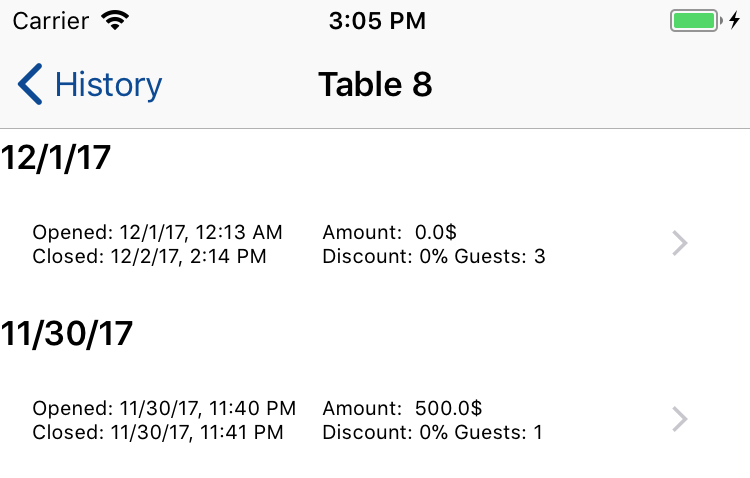
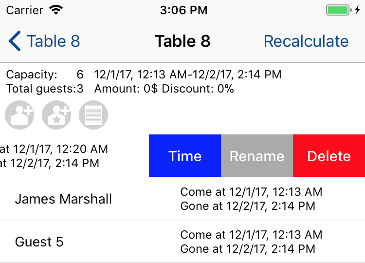

Open Reports view. Once view is appeared, you will see report for current day. You can choose another period - Month or Year. All reports are generated for period, started from 00:00 of current day, month or year. You can also choose custom period.
Tap on any row to display chart. If period is more than 1 month, you will be able to choose step for chart.
You can export report to CSV file. File can be sent over email using Mail client or saved to your iCloud Documents (iOS 11 or higher is required).
WARNING! Unfortunately not all messengers support sending CSV files. At the moment Telegram supports CSV files, but WhatsApp or VK do not.
WARNING! You may face an issue with encoding while opening exported file with Excel. If you did, please follow steps below to fix it:
For Windows:
1) Open exported file with NotePad.
2) Click File-Save as.
3) Choose encoding type - ANSI.
4) Then re-open saved file with Excel, issue should be solved.
For Mac OS:
1) Create new document in your Microsoft Excel for Mac
2) Click File - Import - CSV file.
3) Choose encoding: UTF-8 Unicode.
4) Choose delimiter "," and uncheck other checkboxes. Proceed with import.
Did not help? Please contact me, I'll try to help.
Open History view and choose required table. You will see sessions history for chosen table.

Choose required session. Table view will appear. Here you can do some things:
1. Add quick or custom guests. Arrival and departure time will be set automatically and will be equal to table session timings.
2. Rename or remove guests, change arrival and departure time of each gust. Time period will be limited to session timing.

3. Change or remove orders.
4. Round existing amount or apply discount by pressing Recalculate button.